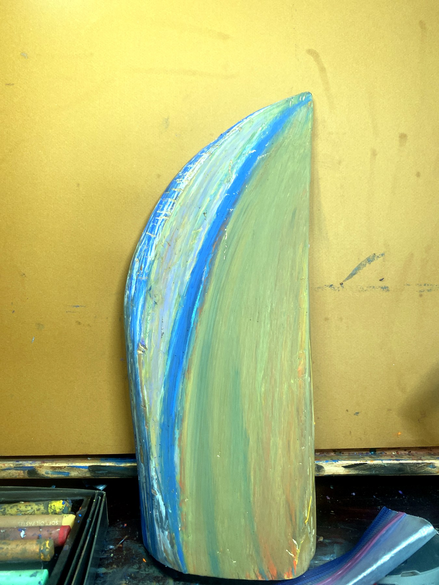
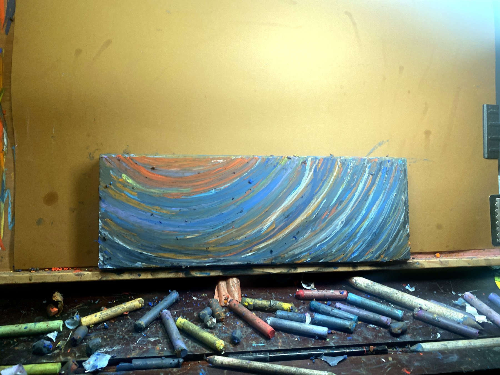
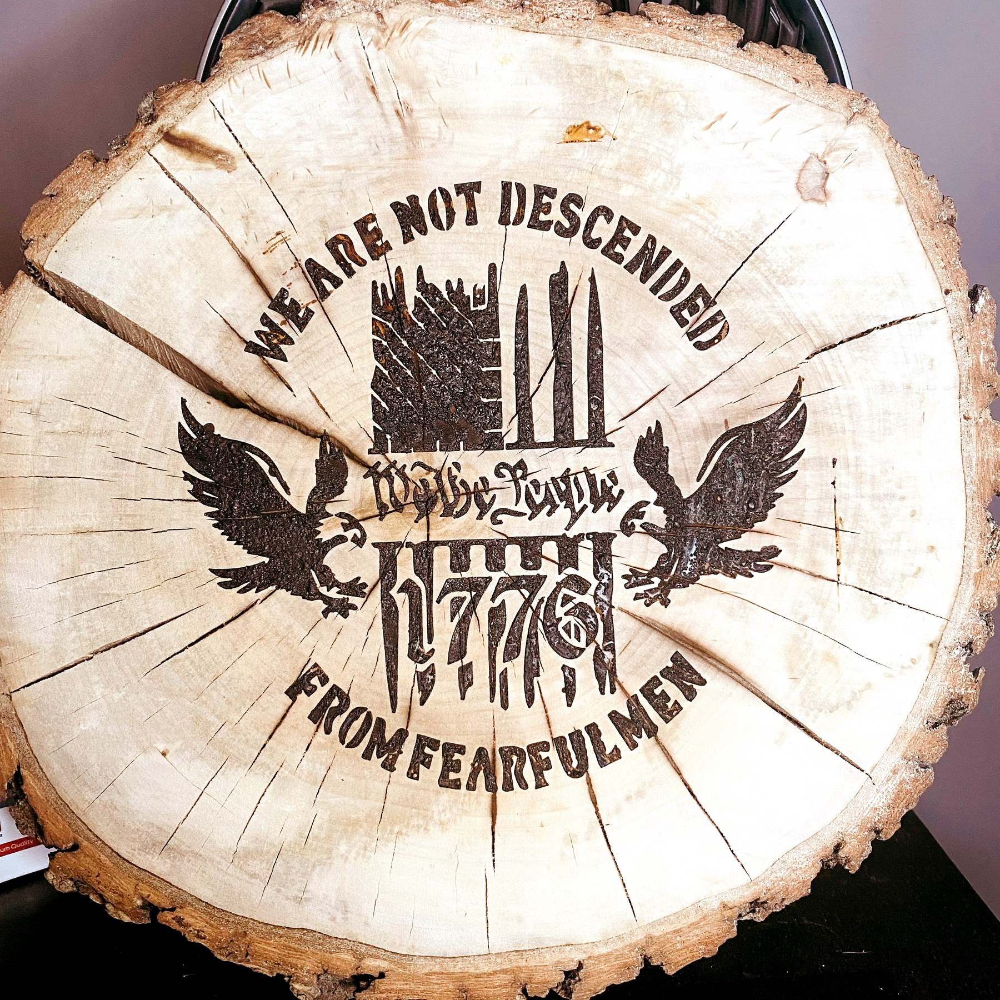

Robert's Poem
Rain at the studio window.
Ink moving like memory.
A room opens, and the work begins.
Inkspirations Portfolio
Artwork, writing, music, functional art, and interactive rooms gathered into one connected creative home.
Start with the studio map, then move into the artwork gallery or the room-style projects.
Studio World
Inkspirations is organized as a connected studio: artwork, writing, music, coasters, tools, systems, and interactive rooms all have a clear place.
Artwork
A clean gallery view of Robert's selected work. Use the filters to move through collections, or open any piece for a larger museum-style view.
No works match this view yet. Try another filter or search term.
Writing / Poem
A visible writing feature for the poem and the language side of Inkspirations Studios. Word-based visual pieces remain available in the gallery under Words & Expressions.
Rain at the studio window.
Ink moving like memory.
A room opens, and the work begins.
Coasters / Functional Art
A dedicated portfolio project for coaster artwork, usable surface studies, product experiments, and object-based collections connected directly to the Merch Concept Foundry.

Coaster StudyBlue Current CoasterFunctional art object
Functional ArtBlue Wave Wood PanelSurface and object study
Wood StudyNatural Round StudyObject detailInteractive Rooms
Studio rooms, audio spaces, room maps, intake flows, product labs, and command-center style interfaces are gathered here as part of the portfolio.